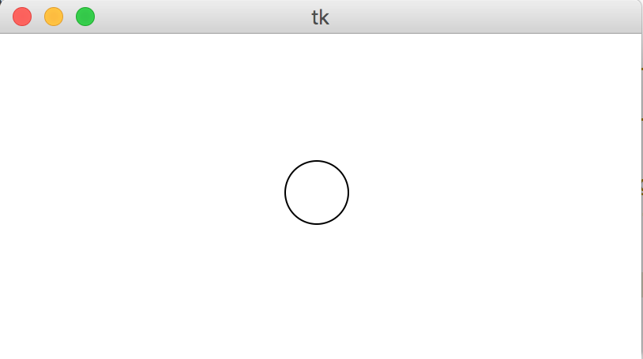
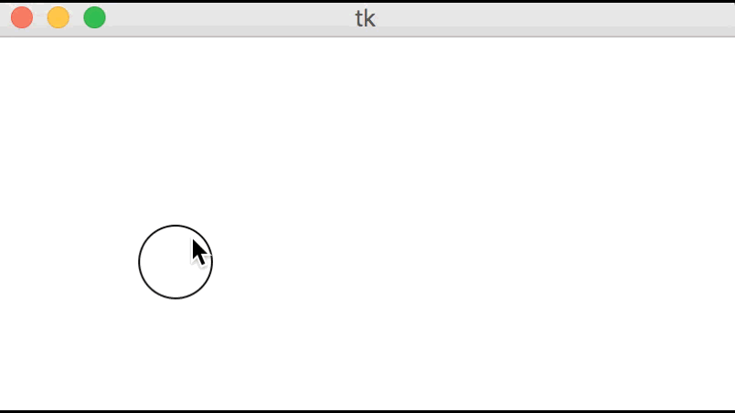
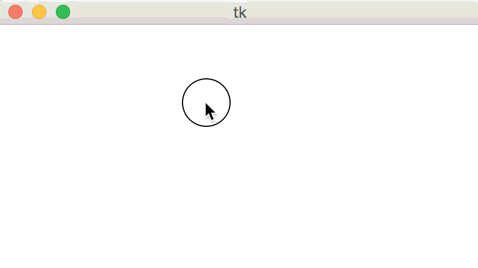
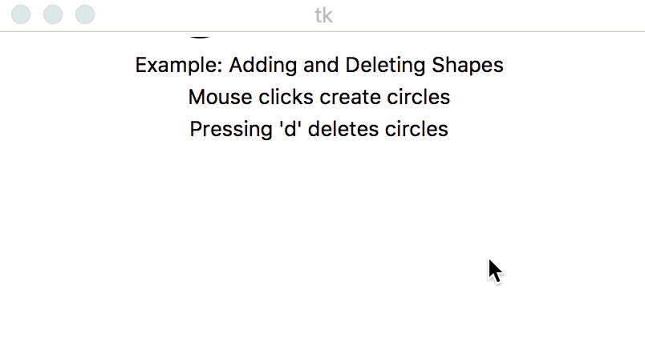
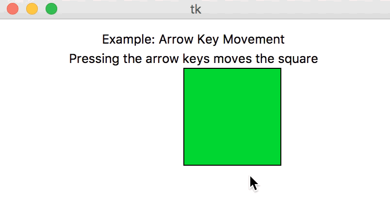
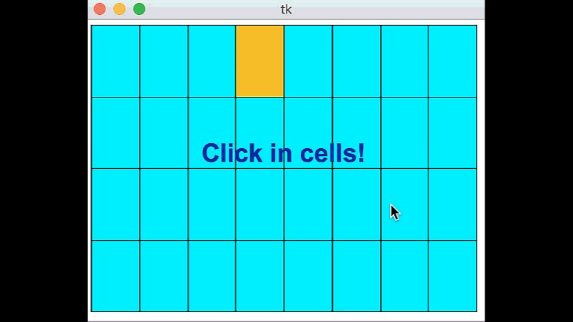

CMU 15-112: Fundamentals of Programming and Computer Science
Class Notes: Animation Part 1: Event-Based Animations in Tkinter
Note: We will only run animations in Standard Python. These examples will not run in Brython.
- Event Loop and MVC
- Create an Empty Animation
- Model: init
- View: redrawAll
- Controller: mousePressed
- Controller: keyPressed
- Example: Adding and Deleting Shapes
- Example: Arrow Key Movement
- Example: Grid Demo
- Event Loop and MVC
- When writing animation code, we introduce the concept of an event loop. This is a neverending loop controlled by Tkinter, which Tkinter uses to control when your functions are called. When your functions are done, Tkinter takes control again.
- The event loop uses three core concepts to run animations: the model, view, and controllers.
- Controller: When an event happens (like a mouse or keyboard press), Tkinter calls the appropriate event handler function, or controller, which you write. In our examples here, that is mousePressed or keyPressed.
- Model: These event handlers modify the model, which is where all the underlying data of the animation is stored. The model represents the state of the animation, and is defined initially in the init function.
- View: When the controller is done, Tkinter updates the view by calling your function redrawAll, which redraws the canvas (the view) based on the model (the values in data).
- These concepts of the model, the view, and the controller are the core ideas behind writing animations. It's also important that they all be kept in line. The controller should update the model, and the view should use the data in the model. But the controller should not impact the view directly, and the view should not modify the model.
- What happens if the controller tries to draw things in the view? They'll get replaced the next time redrawAll gets called!
- What happens if the view modifies the model? It may modify the model in ways we don't expect, because redrawAll can get called at unpredictable times!
- These are known as MVC violations. They are considered style errors and will also result in tricky bugs occurring in your code.
- Create an Empty Animation
# Basic Animation Framework from tkinter import * #################################### # customize these functions #################################### def init(data): # load data.xyz as appropriate pass def mousePressed(event, data): # use event.x and event.y pass def keyPressed(event, data): # use event.char and event.keysym pass def redrawAll(canvas, data): # draw in canvas pass #################################### # use the run function as-is #################################### def run(width=300, height=300): def redrawAllWrapper(canvas, data): canvas.delete(ALL) canvas.create_rectangle(0, 0, data.width, data.height, fill='white', width=0) redrawAll(canvas, data) canvas.update() def mousePressedWrapper(event, canvas, data): mousePressed(event, data) redrawAllWrapper(canvas, data) def keyPressedWrapper(event, canvas, data): keyPressed(event, data) redrawAllWrapper(canvas, data) # Set up data and call init class Struct(object): pass data = Struct() data.width = width data.height = height init(data) # create the root and the canvas root = Tk() canvas = Canvas(root, width=data.width, height=data.height) canvas.pack() # set up events root.bind("<Button-1>", lambda event: mousePressedWrapper(event, canvas, data)) root.bind("<Key>", lambda event: keyPressedWrapper(event, canvas, data)) redrawAll(canvas, data) # and launch the app root.mainloop() # blocks until window is closed print("bye!") run(400, 200)Result:

- Model: init
# Set up the model data with init # init is called once, at the beginning of the program # data is a Struct, which can be given new data values using data.name = value # data will be shared across all animation functions- it's aliased! def init(data): # data comes preset with width and height, from the run function data.circleSize = min(data.width, data.height) / 10 data.circleX = data.width/2 data.circleY = data.height/2 data.charText = "" data.keysymText = ""Result:
- View: redrawAll
# Draw graphics normally with redrawAll # Main difference: the data struct contains helpful information to assist drawing # Also, the canvas will get cleared and this will be called again # constantly by the event loop. def redrawAll(canvas, data): canvas.create_oval(data.circleX - data.circleSize, data.circleY - data.circleSize, data.circleX + data.circleSize, data.circleY + data.circleSize) if data.charText != "": canvas.create_text(data.width/10, data.height/3, text="char: " + data.charText) if data.keysymText != "": canvas.create_text(data.width/10, data.height*2/3, text="keysym: " + data.keysymText)Result:
 - Controller: mousePressed
# Track and respond to mouse clicks # The event variable holds all of the data captured by the event loop # For mousePressed, this is event.x and event.y, the position where # the mouse was clicked def mousePressed(event, data): data.circleX = event.x data.circleY = event.yResult:
 - Controller: keyPressed
# Track and respond to key presses # The event variable holds all of the data captured by the event loop # For keyPressed, this is event.char and event.keysym # event.char holds the direct key that was pressed, "a", "3", "@", etc. # event.keysym holds special names for certain keys non-alphanumeric keys # for example, "space", "BackSpace", "parenleft", "exclam" def keyPressed(event, data): data.charText = event.char data.keysymText = event.keysymResult:
 - Example: Adding and Deleting Shapes
# Adds shapes on mouse clicks and deletes them on pressing 'd' def init(data): data.circleCenters = [ ] def mousePressed(event, data): newCircleCenter = (event.x, event.y) data.circleCenters.append(newCircleCenter) def keyPressed(event, data): if (event.char == "d"): if (len(data.circleCenters) > 0): data.circleCenters.pop(0) else: print("No more circles to delete!") def redrawAll(canvas, data): # draw the circles for circleCenter in data.circleCenters: (cx, cy) = circleCenter r = 20 canvas.create_oval(cx-r, cy-r, cx+r, cy+r, fill="cyan") # draw the text canvas.create_text(data.width/2, 20, text="Example: Adding and Deleting Shapes") canvas.create_text(data.width/2, 40, text="Mouse clicks create circles") canvas.create_text(data.width/2, 60, text="Pressing 'd' deletes circles")Result:
 - Example: Arrow Key Movement
# moves the green square using the arrow keys def init(data): data.squareX = data.width/2 data.squareY = data.height/2 def mousePressed(event, data): pass def keyPressed(event, data): if event.keysym == "Up": data.squareY -= 20 elif event.keysym == "Down": data.squareY += 20 elif event.keysym == "Left": data.squareX -= 20 elif event.keysym == "Right": data.squareX += 20 def redrawAll(canvas, data): # draw the text canvas.create_text(data.width/2, 20, text="Example: Arrow Key Movement") canvas.create_text(data.width/2, 40, text="Pressing the arrow keys moves the square") # draw the square size = 50 canvas.create_rectangle(data.squareX - size, data.squareY - size, data.squareX + size, data.squareY + size, fill="green")Result:
 - Example: Grid Demo
# Grid Demo def init(data): data.rows = 4 data.cols = 8 data.margin = 5 # margin around grid data.selection = (-1, -1) # (row, col) of selection, (-1,-1) for none def pointInGrid(x, y, data): # return True if (x, y) is inside the grid defined by data. return ((data.margin <= x <= data.width-data.margin) and (data.margin <= y <= data.height-data.margin)) def getCell(x, y, data): # aka "viewToModel" # return (row, col) in which (x, y) occurred or (-1, -1) if outside grid. if (not pointInGrid(x, y, data)): return (-1, -1) gridWidth = data.width - 2*data.margin gridHeight = data.height - 2*data.margin cellWidth = gridWidth / data.cols cellHeight = gridHeight / data.rows row = (y - data.margin) // cellHeight col = (x - data.margin) // cellWidth # triple-check that we are in bounds row = min(data.rows-1, max(0, row)) col = min(data.cols-1, max(0, col)) return (row, col) def getCellBounds(row, col, data): # aka "modelToView" # returns (x0, y0, x1, y1) corners/bounding box of given cell in grid gridWidth = data.width - 2*data.margin gridHeight = data.height - 2*data.margin columnWidth = gridWidth / data.cols rowHeight = gridHeight / data.rows x0 = data.margin + col * columnWidth x1 = data.margin + (col+1) * columnWidth y0 = data.margin + row * rowHeight y1 = data.margin + (row+1) * rowHeight return (x0, y0, x1, y1) def mousePressed(event, data): (row, col) = getCell(event.x, event.y, data) # select this (row, col) unless it is selected if (data.selection == (row, col)): data.selection = (-1, -1) else: data.selection = (row, col) def keyPressed(event, data): pass def redrawAll(canvas, data): # draw grid of cells for row in range(data.rows): for col in range(data.cols): (x0, y0, x1, y1) = getCellBounds(row, col, data) fill = "orange" if (data.selection == (row, col)) else "cyan" canvas.create_rectangle(x0, y0, x1, y1, fill=fill) canvas.create_text(data.width/2, data.height/2 - 15, text="Click in cells!", font="Arial 26 bold", fill="darkBlue")Result:
